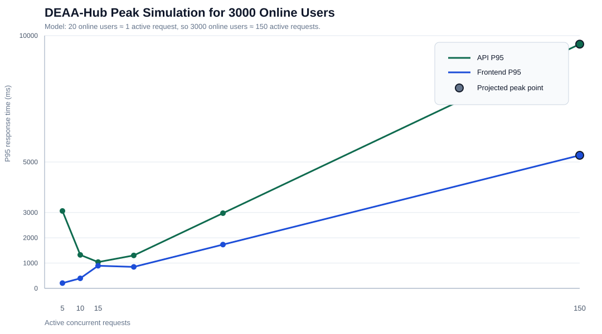

This report is designed for non-technical presentation. It estimates 3000 online users as about 150 active requests at the same moment, using a 1:20 active-user model. It is a planning simulation based on measured tests, not a destructive full 3000-browser production test.

| Area | Projected P50 | Projected P95 | Projected RPS | Status |
|---|---|---|---|---|
| API | 115 ms | 9663 ms | 50.35 | critical |
| Frontend | 3918 ms | 5264 ms | 41.89 | critical |
Recommendation: before an official 3000-user live load test, use a maintenance window, confirm Vercel/Neon limits, and run a ramp test with monitoring enabled.